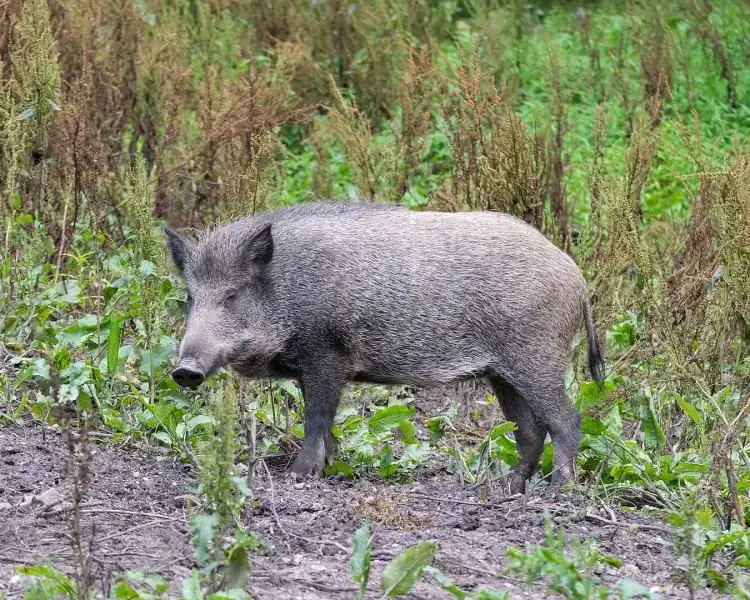

Дивља свиња

Дивља свиња (Sus scrofa).
□ Таксономија
| Царство: | Animalia |
| Тип: | Chordata |
| Класа: | Mammalia — Сисари |
| Ред: | Artiodactyla — Папкари |
| Породица: | Suidae — Свиње |
| Род: | Sus Linnaeus, 1758 |
| Врста: | Sus scrofa Linnaeus, 1758 |
| Подврста: | S. s. scrofa — западноевропска дивља свиња |
| Статус: | IUCN (глобално) LC — најмања забринутост · дивљач чије је коришћење регулисано прописима |
| Станиште: | Листопадне шуме богате жиром, блатишта, ливаде — све зоне Рајца |
| Маса / дужина: | 50–200 kg · 100–180 cm тело |
Извор звука: Wikimedia Commons — File:Боар.Грвлс(1).огг.
🔍 Морфологија и карактеристике
Дивља свиња (Sus scrofa) је један од најширим ареалом распрострањених крупних сисара на свету, и претком домаћих свиња. Тело је снажно, бачвасто, са кратким ногама и карактеристичном великом, клинастом главом. Вратни и леђни мишићи чине мало грбу. Нос завршава „ружицом" — хрскавичном подлогом са ноздрвама — која је снажан орган за копање и њушкање.
Длака је чврста, четинаста, обично тамносива до смеђецрна. Дуж кичме је гребен дуже длаке. Прасад имају карактеристичне уздужне беле пруге по тамносмеђој длаци — „бастуна" образац — которји нестаје са 3–4 месеца. Мужјаци (веприси) знатно су крупнији од женки (крмача). Одрасли вепар може тежити 150–200 kg, изузетно и до 300 kg. Клице (кутњаци) мужјака дужине 10–15 cm изражено вире из уста — примарни инструмент одбране и борбе.
Чуло мириса изузетно је развијено — дивља свиња може осетити мирис хране закопане 10–15 cm испод земље. Слух је такође одличан; вид нешто слабији, али добро разликује покрет.
🌿 Станиште на Рајцу
Дивља свиња је еколошки универзалиста — насељава листопадне шуме, мешовите шуме, ретке грмове, мочвартна подручја и пољопривредне терене. На Рајцу је доминантна врста у свим шумским зонама, са највећом густином у буковим и храстовим шумама богатим жиром. Посебно воли шумске депресије са влажним, меким тлом погодним за ровање и валање.
Валишта (блатишта) — плитка калишта у ниским деловима терена — кључна су за терморегулацију и уклањање паразита. Свиња прво облокаше блато а затим се трља о корење или дрво — типичан знак присуства у пределу. Радиус кретања чопора обично је 5–15 km², а при оскудици хране јединке могу путовати 30–40 km у потрази за жиром.
🔬 Биологија и понашање
Дивља свиња је претежно ноћна и сумрачна животиња — дање мирује у густом подраслику или грабском шикарју. Друштвена је врста: крмаче живе у чопорима 4–20 јединки (матрилинеарни клан), а мужјаци су солитарни ван сезоне парења. Млади вепрови (годишњаци) могу формирати сопствене „момачке" чопоре.
Гласање је разноврсно: грокотање при мирном ровању, оштро „уф" при узбуни, вриштање при страху или болу, лупкање зубима вепра при претњи. Свиња је изузетно интелигентна животиња са добром просторном меморијом — памти изворе хране, локације валишта и безбедних путева.
🍃 Исхрана
Дивља свиња је типичан свеједер — опортунистичка и сезонска. Основу дијете на Рајцу чине: жир (херастов, буков, кестенов) — до 70% јесење дијете; корење и луковице шумских биљака; гљиве подземне и надземне; земљани черви, ларве хруштева и других инсеката; мишеви и волухарице (ловљени копањем); птичја јаја и птице гнездарице на тлу (повремено); стрвина и угинуле животиње.
Потражња хране по јединки износи 3–5 kg дневно. Јесен је кључна сезона гојења — свиња акумулира масне резерве за зиму и период прасења. Свиња може процесуирати и биљни материјал са отровима које друге врсте не могу — нпр. неке врсте гљива и луковица.
🌸 Размножавање
Риј (парење) одвија се у новембру–јануару, са врхунцем у децембру. Вепар у рију испушта жлезде мириса (слиновне и вратне) и активно тражи рецептивне крмаче у широком кругу. Доминантни мужјаци боре се гласним грокотањем, трчањем и бодежима клица.
Гравидитет траје 115–120 дана (ок. 4 месеца). Крмача прасе у марту–мају, изолована од чопора, у гнезду направљеном од грана и листопада. Легло броји 4–12 прасади, просечно 5–7. Прасад су неколико сати после рођења способна да прате мајку. Дојење траје 3–4 месеца, а млади остају уз мајку до следеће сезоне прасења.
🔄 Екологија и улога у екосистему
Дивља свиња је кључна врста (keystone species) шумских екосистема умереног климата. Ровањем тла ствара мозаик микростаништа — преврнута земља представља идеалан клијалиште за шумске биљке, гљиве и нове стале биљних заједница. Свиња је уједно главни распрострањивач спора хиогених гљива.
Са друге стране, прекомерна бројност (пренасељеност) доводи до деградације приземне вегетације, ускоро уклањања гнезда птица тла и значајних штета на пољопривредним усевима у периферним зонама. На Рајцу је ровање видљиво у готово свим деловима шуме и представља стални изазов за мониторинг популације.
🛡 Заштита и статус
Дивља свиња је у Србији класификована као дивљач чије је коришћење регулисано прописима под Законом о дивљачи и ловству. Популација је бројна и у порасту широм Европе — захваљујући редукцији природних предатора (вук, рис) и интензивног дохрањивања у ловиштима. На Рајцу лов је регулисан управљачким планом ловишта.
Главна здравствена претња: Африканска куга свиња (ASF — African Swine Fever) — вирусна болест без лека, не преноси се на људе, али је фатална за свиње. У Србији је присутна у суседним регионима. Болест се шири директним контактом и преко стрвина. Мониторинг популације на Рајцу укључује редовна узорковања ради надзора ASF.
🗓 Календар активности на Рајцу
Када је дивљу свињу најлакше опазити и шта очекивати у сваком месецу на подручју ПИО „Рајац":
🐾 Трагови и знаци присуства
Дивља свиња оставља изразито видљиве и карактеристичне трагове — присуство на Рајцу готово увек је лако потврдити:
| Дужина папка | 6–9 cm (много шири и округлији него код срне) |
| Ширина папка | 5–7 cm |
| Облик | Широк, округао; задњи прсти скоро увек видљиви |
| Задњи прсти | Видљиви уназад — главна разлика од срне |
| Ходни образац | Широке, изразите стазе у шуми; лист. и блато избраздано |
| Дужина корака | 50–70 cm у умереном ходу одраслог вепра |
🌱 Ровање тла
Главни знак присуства: преврнути слојеви тла и листопада, уздужне бразде широке 10–20 cm. Дубина 5–15 cm. Свежи трагови имају влажну, тамну унутрашњост. Ровање видљиво у целој шуми, посебно у влажним деловима терена.
🛁 Валишта (блатишта)
Плитка удубљења у влажном тлу, промера 1–3 m, пуна блата и длаке. Свиња прво калиша тело а затим трља о оближња дрва — кора обојена блатом до висине 70–100 cm. Дрво остаје мокро дуго после посете.
💩 Измет
Компактне, цилиндричне пилуле дужине 3–5 cm, у гомили. Садржи биљне остатке, семена, кости. Може бити веома мекан и неформиран у периоду жирења. Обично одложен на видљивом месту уз стазу.
🌲 Трагови на дрвећу
Клице вепра остављају карактеристичне паралелне бразде у кори млаðих дрвета. Трљиште — гладак ожиљак коре до висине 50–80 cm са остатком длаке и трагом блата. Типично на стаблима са пречником 15–30 cm.
📷 Фото-замке — водич за посматрање
Дивља свиња је ноћна и опрезна — лако је идентификовати трагове, али директно посматрање захтева стрпљење. Фото-замка поред активног валишта или стазе бележи скоро сваку ноћ.
Где поставити
Поред активних валишта — најбоља позиција. Дуж шумских стаза са видљивим ровинама. Уз блатна подручја и извора. На пролазу кроз ограду или рупу у шикарју.
Висина и угао
50–70 cm висине — висина трупа дивље свиње. Угао 20–30° надоле. Осетљивост на широко. Заштитити замку од ровања — учврстити конопцем јер свиња може порушити стубац!
Кад очекивати снимак
Највише снимака: 21 ч до поноћи и прво јутарње свитање. Октобар: свиња дневно код храстова. Март–мај: крмача са прасадима — врло ретко, не узнемиравати.